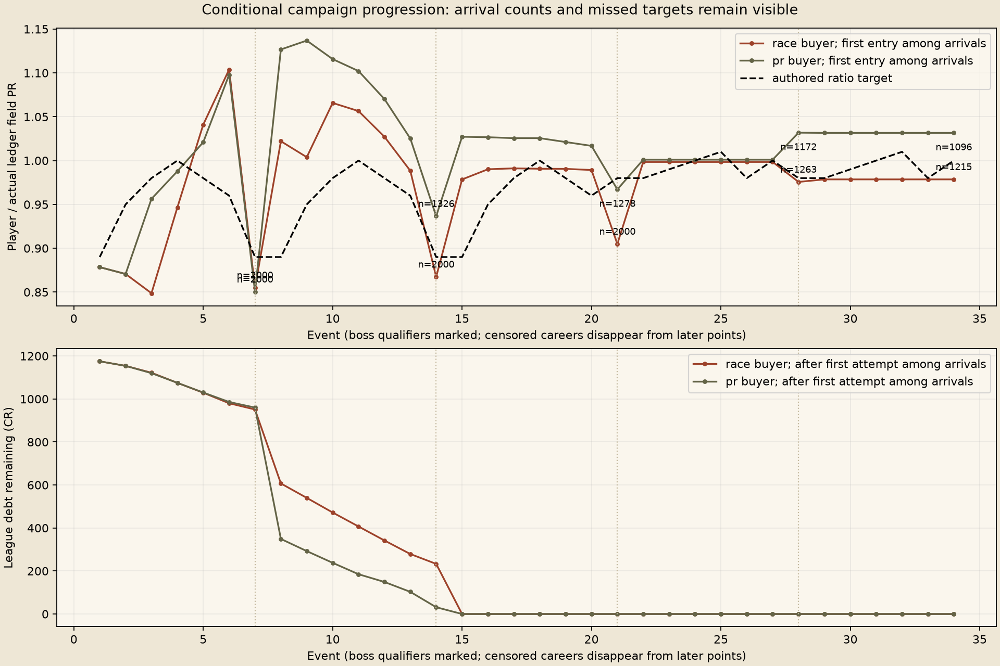
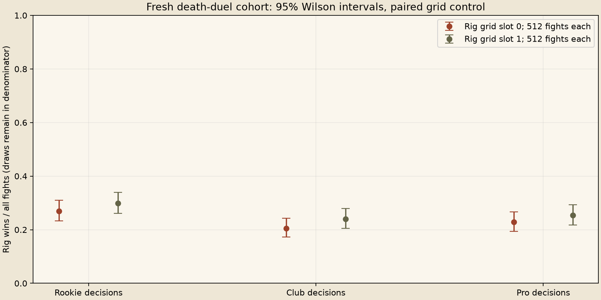

Fresh physical outcomes, conditional ledger resampling, no human feel verdict. Failed targets and censored careers remain results.


Race buyer uses two training seeds to pick each chassis; PR buyer is the control. Both resample the other two regular-event seeds and eighteen held-out boss seeds. The 70-race observation limit censors unfinished careers.
| Buyer | Decisions | Reward | N | Completed | Censored | Bankrupt | Finale arrived |
|---|---|---|---|---|---|---|---|
| race | Rookie | money | 223 | 0 | 223 | 0 | 0 |
| race | Rookie | car | 222 | 0 | 222 | 0 | 0 |
| race | Rookie | part | 222 | 0 | 222 | 0 | 0 |
| race | Club | money | 223 | 160 | 63 | 0 | 175 |
| race | Club | car | 222 | 176 | 46 | 0 | 187 |
| race | Club | part | 222 | 160 | 62 | 0 | 179 |
| race | Pro | money | 222 | 222 | 0 | 0 | 222 |
| race | Pro | car | 222 | 222 | 0 | 0 | 222 |
| race | Pro | part | 222 | 222 | 0 | 0 | 222 |
| pr | Rookie | money | 223 | 0 | 223 | 0 | 0 |
| pr | Rookie | car | 222 | 0 | 222 | 0 | 0 |
| pr | Rookie | part | 222 | 0 | 222 | 0 | 0 |
| pr | Club | money | 223 | 117 | 106 | 0 | 144 |
| pr | Club | car | 222 | 101 | 121 | 0 | 138 |
| pr | Club | part | 222 | 125 | 97 | 0 | 150 |
| pr | Pro | money | 222 | 208 | 14 | 0 | 216 |
| pr | Pro | car | 222 | 203 | 19 | 0 | 216 |
| pr | Pro | part | 222 | 207 | 15 | 0 | 214 |
Full measured summary and caveats. Gzip CSV files retain raw outcomes and source hashes.